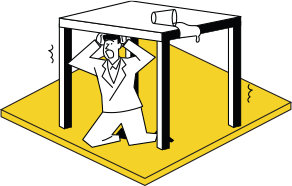
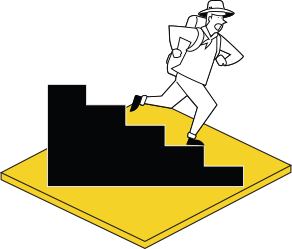
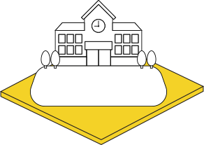
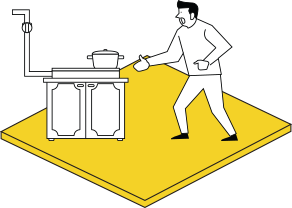
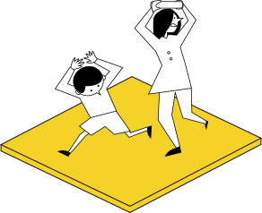
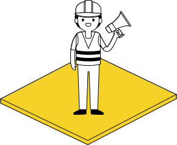

지진 발생 시
대피 상황
-

1
지진으로 흔들릴 때
지진 발생으로 진동이 큰 시간은 대부분 길어야 1~2분으로 이때는 중심이 낮고 튼튼한 탁자 등 밑에 들어가 탁자 다리를 꼭 잡습니다.
-

3
건물 밖으로 나갈 때
건물 밖을 나갈때에는 엘리베이터를 사용하지 말고 계단을 이용해 탈출합니다.
엘리베이터 안에 있을 경우 모든 층의 버튼을 눌러 먼저 열리는 층에서 내립니다. -

5
대피장소를 찾을 때
차량을 이용하지 말고 신속하게 운동장이나 공원 등 넓은 공간으로 대피합니다.
-

2
흔들림이 멈췄을 때
흔들림이 멈추면 전기와 가스를 차단하고, 문을 열어 출구를 확보합니다.
-

4
건물 밖으로 나왔을 때
바깥에서는 가방이나 손으로 머리를 보호하고 건물, 담벼락, 대문, 기둥 등과 거리를 유지하며 대피합니다.
-

6
대피장소에 도착한 후
침착하게 라디오나 공공기관의 안내 방송 등 올바른 정보에 따라 행동합니다.